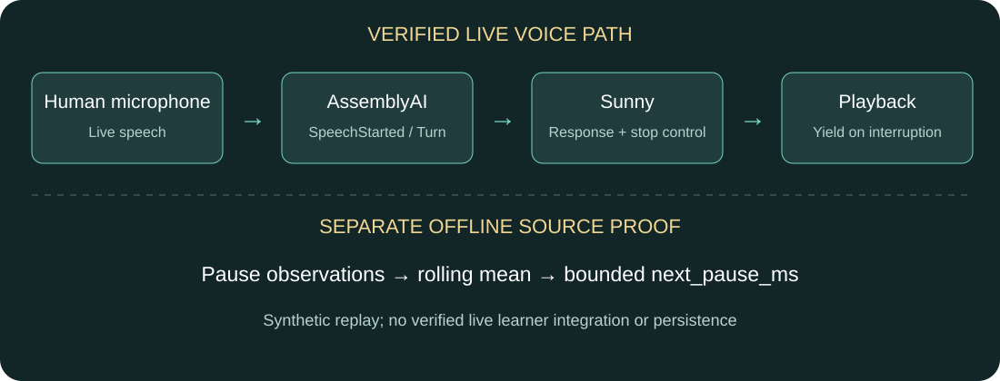

SpeechStarted
AssemblyAI detects the new human speech event.

MI-087 · AssemblyAI Voice Agent Hackathon
AssemblyAI understands when you speak. Sunny handles turns and interruptions. Its separate offline rhythm prototype updates a bounded next-response pause policy.
The distinction
AssemblyAI supplies real-time speech and turn events. Sunny uses those events to handle responses and yield playback. The numerical learning proof is an offline component, separate from the human-tested voice path.
Submission film
95 seconds · Product visualization + sanitized human event proof
01:05–01:20: Real microphone test — sanitized event proof with recorded relative timestamps. No raw tester audio or transcript; the animated woman is not the human tester. Other scenes use synthesized dialogue. Offline pause adaptation is tested separately, not verified in the live human path.
How Sunny works
AssemblyAI produces speech and turn signals. Sunny handles the accepted turn and yields playback on new speech.
Natural speech enters the live audio stream.
Real-time SpeechStarted and turn events arrive as the conversation unfolds.
Accepted turns feed Sunny; SpeechStarted during playback triggers the interruption handler.
The accepted new turn produces a response after playback yields.
Offline state-update proof
The existing offline rhythm prototype updates a rolling pause average and the next-response wait policy. Synthetic 900 ms observations change that policy from 300 to 360 to 414 ms. These are computed policy values, not measured latency; live learning is not verified.
Architecture
AssemblyAI supplies real-time speech intelligence. Sunny handles responses and playback control. Offline rhythm adaptation is a separate evidence track.

Verified with a human in the loop
Physical human microphone → AssemblyAI v3 speech events → Sunny → speaker
Playback active → SpeechStarted → stop / duck → new turn → response
Human evidence is recorded functional validation. Offline learning is separately reproducible from existing source; live automatic learning is not verified. Event timestamps are not acoustic latency measurements. Identity, personality and emotion inference are out of scope for this proof.
Redacted evidence ↗Claim-by-claim status ↗Executable learning proof ↗For Judges — verify Sunny in 60 seconds ↗
AssemblyAI understands when you speak.